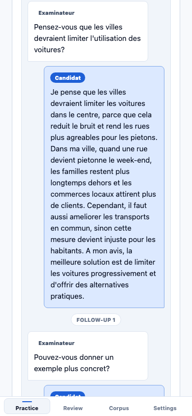
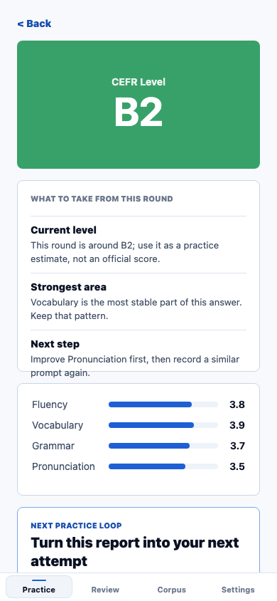
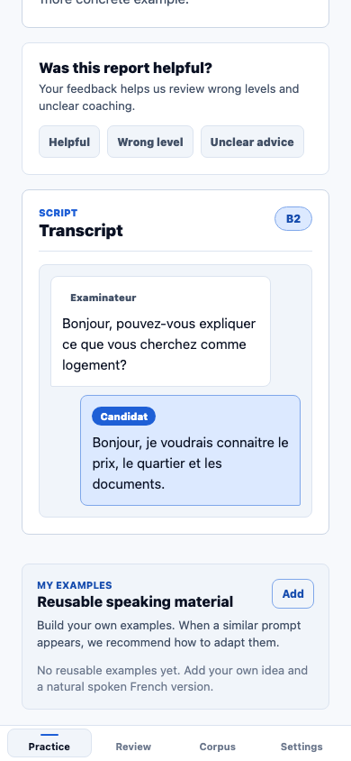

Browse prompt patterns
Past-exam inspired speaking prompts are collected into a practical study bank.
 Canada-focused French speaking preparation
Canada-focused French speaking preparation
Past prompt patterns, AI follow-ups, saved examples
SpeakCanada AI helps independent learners practice from past-exam inspired French speaking prompts, get AI follow-up questions based on their own answers, save reusable examples, and find related questions for the next focused review.
Testing QR reserved
TestFlight QR reserved
Independent study product. AI feedback is learning guidance, not an official score.

Product workflow
Past-exam inspired speaking prompts are collected into a practical study bank.
Questions are classified by task, topic, subtopic, and similar prompt groups.
AI feedback creates follow-up questions so one answer becomes a short interaction.
Reusable personal examples help the app recommend related prompts for review.

Growth loop
The strongest product loop is not just scoring. After a full oral round, learners see the script, save reusable examples, review matched examples, and jump into a related or weak-area prompt.
Real product screens
The public page uses real product captures: prompt bank organization, same-session AI turns, saved examples, and mobile review flow.

Task, time, topic, source, and similar prompt groups help learners find focused practice.
T1 and T3 continue as examiner/candidate turns before the final report. T2 is also handled as one multi-turn examiner dialogue.

The example “veg-friend-cafe” is matched to a vegetarian restaurant prompt from the recommendation eval set.

The core loop stays available for mobile testing and future app-store rollout.
AI interaction and topic memory
SpeakCanada AI is designed for learners who practice alone but still need interaction. After a T1 or T3 answer, the app can generate examiner-style follow-up questions from the learner's own details, reasons, or examples. T2 works as a live multi-turn conversation with the simulated examiner.

Practice, review, repeat
The experience stays focused on the learner's next useful action: pick a categorized speaking question, answer in French, save a reusable example, and return to related prompts that practice the same theme from another angle.
Privacy and safety
Learners should know what happens before they use voice practice. SpeakCanada AI keeps privacy language simple around personal information, audio processing, and AI feedback.
Practice examples and personal information are not used as public showcase content.
Audio is processed only when the learner starts an AI practice flow that needs speech feedback.
Feedback is learning support, not an official exam result or guarantee.